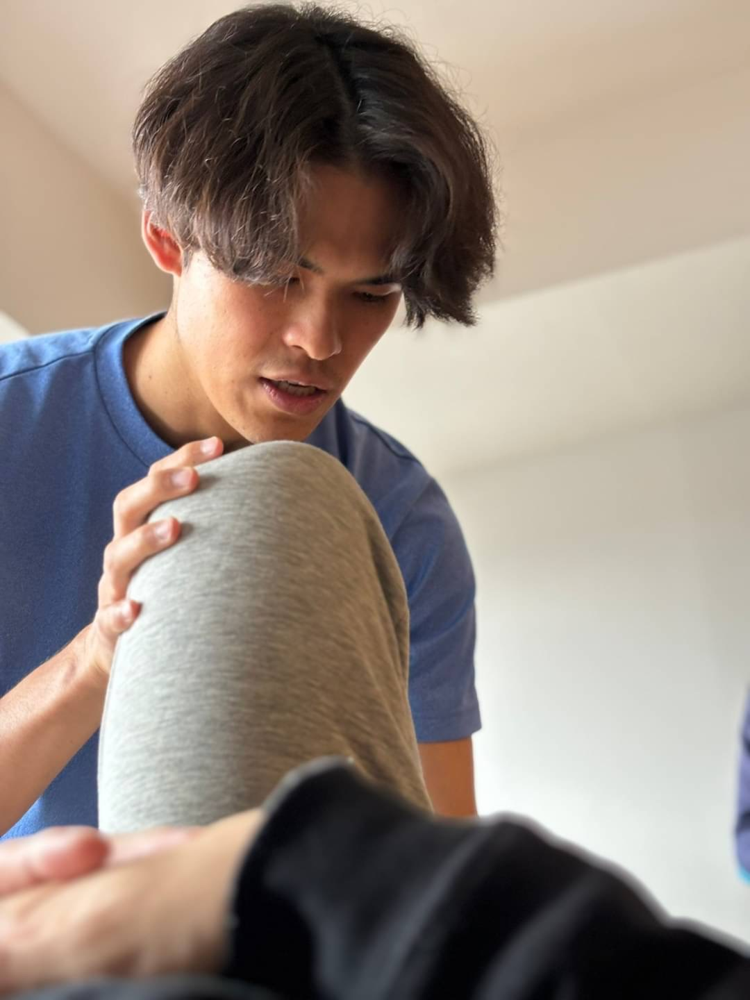
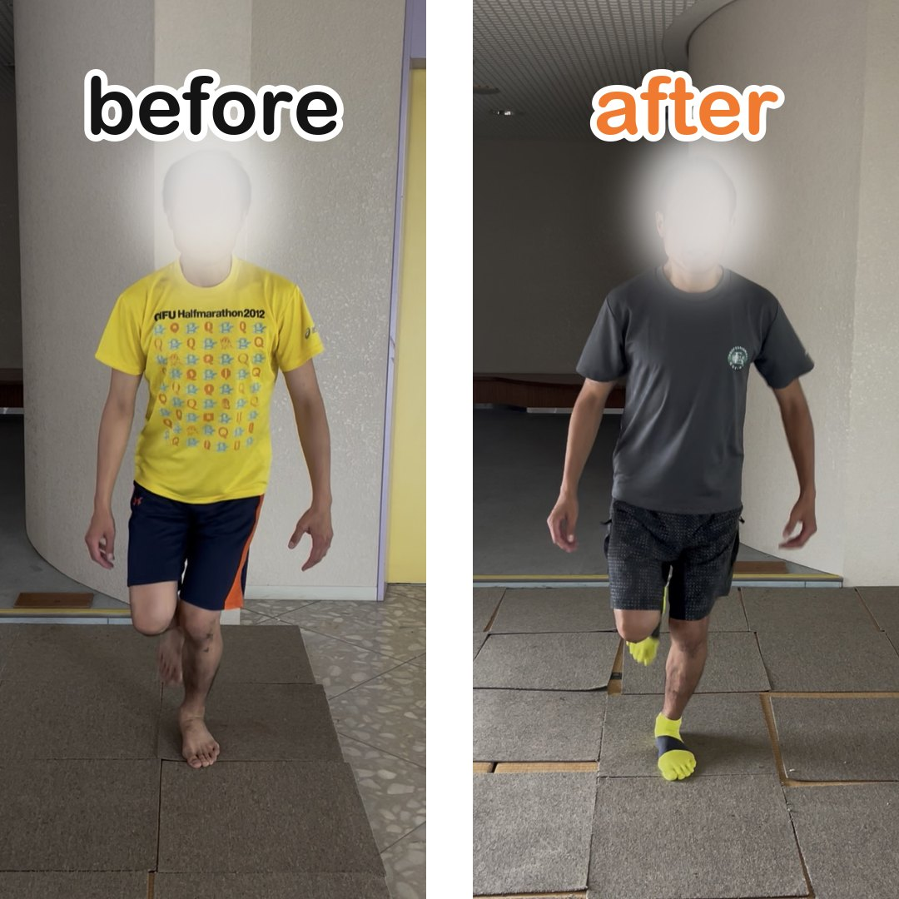
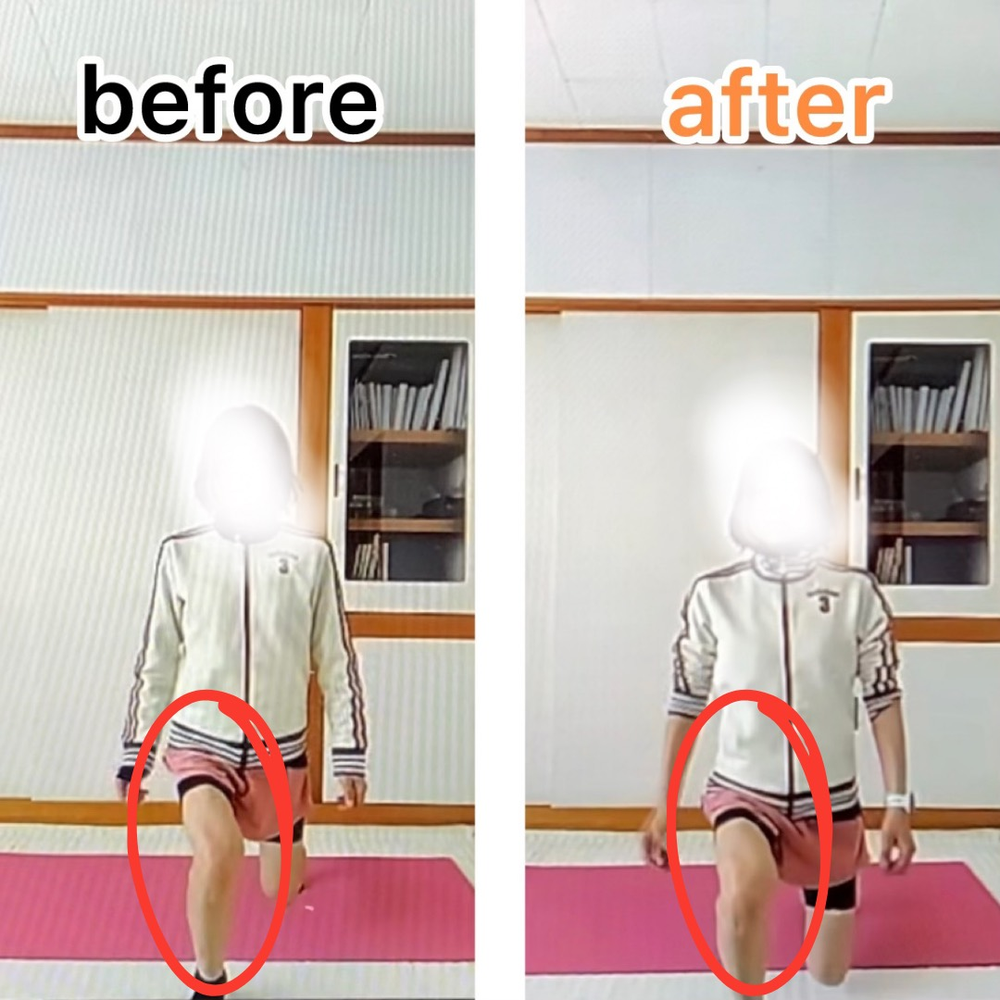
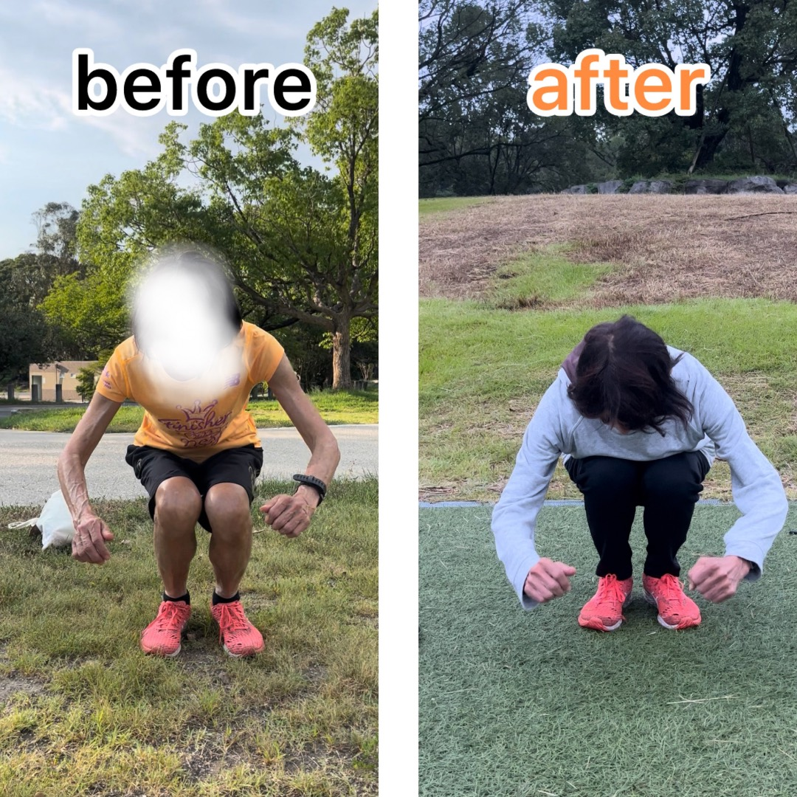
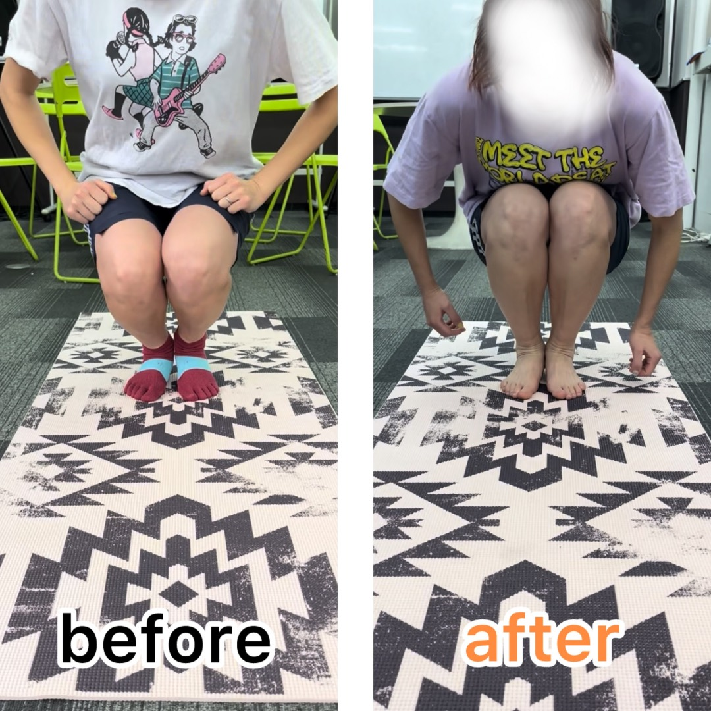
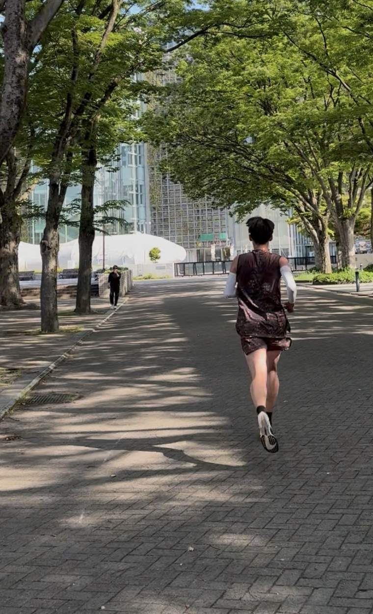
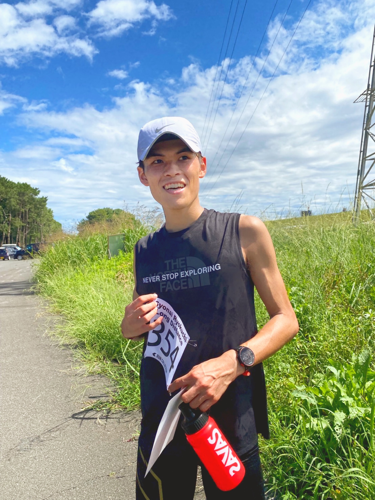
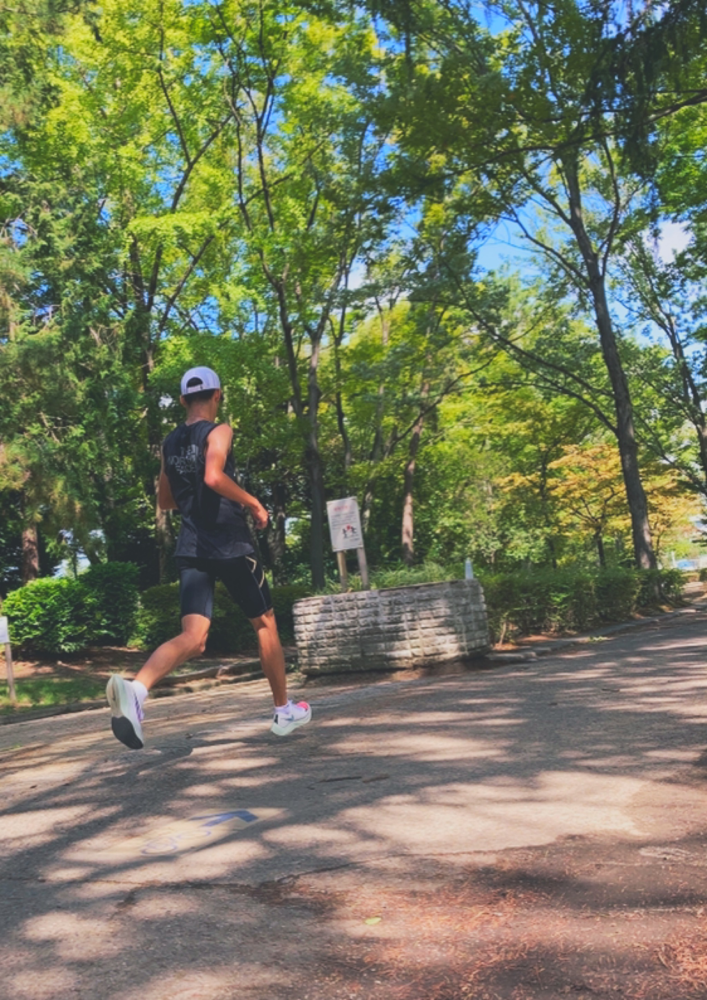

色々試しても治らなかった、長年の痛み。
それでも、もう一度マラソンを走りたい方へ
痛みの原因を、
動きから根本解決
毎月5名様限定
通常1回 8,800円 のところ
初回限定体験セッション80分
¥4,400税込
こんなお悩み
ありませんか？
走り始めは平気なのに、距離が伸びると痛みが出てくる
休むと治まるのに、走り出すとまた同じ場所が痛くなる
病院・治療院・マッサージに通っても、根本的には変わらなかった
ストレッチやフォームを意識するほど、何が正しいのか分からなくなる
このまま痛みとうまく付き合うしかないと感じている
それでも、マラソンを思いきり走りたい
その悩み、付き合っていくものと諦めずに、まずは原因を知ることから始めてみませんか？
なぜ、痛みは繰り返されるのか
ストレッチ、マッサージ、休養、治療。
患部のケアで一時的に良くなっても、走り出すとまた痛くなる。
その理由は、痛みが出る原因そのものが変わっていないからです。
痛みの原因は、痛い場所にあるとは限りません。
その場所に負担をかけ続けている「動き」こそが、本当の原因です。
着地のとき、膝の内側が痛い
【原因】足首まわりと股関節がうまく使えず、着地で膝が内側に逃げている。
着地のあと、地面を押すときに股関節が痛い
【原因】上半身がうまく使えていないぶん、股関節だけで地面を押す割合が大きくなっている。
着地のとき、アキレス腱が痛い
【原因】足首の歪みと腰まわりがうまく使えていないことで、アキレス腱にかかる負担が大きくなっている。
続けても変わらなかったのは、努力が足りなかったからではありません。
原因となる動きを変えない限り、同じ痛みは繰り返されます。
負担のかかり方は、同じ膝痛でも人によって違います。
だからこそ、まずはその原因を知ることが大切です。
サポートの特徴
全身の動きから、
原因を見つける
一般的なアプローチ
痛みのある部分への処置
ほぐす・電気を当てる・ストレッチ・鍼・冷やす／温める・患部まわりの筋トレ など
Re Move
全身の動きを見て、痛みの出ている部分になぜ負担がかかっているのかを分析します。そのうえで、動きを改善するためのエクササイズをお伝えします。
「正しいフォーム」ではなく、
あなたに合った動きを身につける
痛みの原因が一人ひとり違うように、身体に合った動き方にも個人差があります。自分に合った動きを身につけることが、痛みを繰り返さず、走り続けるための近道です。
最後は、自分の力で
動かせるようにする
セッションで動きが良くなっても、身体には、元の使い方やクセに戻ろうとする働きがあります。だからこそ、あなたに合ったエクササイズをお渡しし、良い動きを自分の力で保てるようにしていきます。
同じ悩みを抱えていた
ランナーの変化

痛くて走れない ──
3か月で、ハーフマラソンを
痛みなく走れるまでに
- 悩んできたこと
- 5年ほど前に半月板損傷と診断。リハビリや治療院に通い、休んでは走るの繰り返し
- 原因と取り組み
- 着地で膝が内側へ逃げる動きを、全身で負担を分散できる使い方に改善

鼠蹊部の痛みで、長い時間走れなかったランナー
膝が内側に入る動きを改善し、痛みなく練習を続けられるように。

鵞足炎による膝痛で走れなかったランナー
3か月で痛みが改善。トラックレースに復帰し、その後も再発なく練習を続けている。

フルマラソン後の膝痛に悩んでいたランナー
痛みで左右均等にしゃがめない状態から、痛みなくしゃがめるように。
お客様の声
一見、患部に関係のない様な動きでも、ケアを続けていくと確実に患部に効いていて、いつもびっくりしています！
痛いところや変なクセで硬くなってしまったところを瞬時に見抜き、エクササイズを教えてくださっていつも治るので目からうろこでした！
続ければ確実に変わることを実感しています。とにかく続けてみよう。
※ 変化の感じ方には個人差があります。
こんなランナーにおすすめ
- 長年の痛みに、さまざまな取り組みをしてきたが、改善しきらなかった方
- 痛みなく走れるようになりたいという、強い思いがある方
- 原因を知り、自分でできることに本気で取り組みたい方
体験セッションで得られること
痛みの原因になっている動きがわかる
なぜその場所に負担が集中しているのかを、検査からお伝えします
その動きが変わることを、その場で確かめられる
動かしやすさ・動く範囲・痛みが、前後でどう変わったかを一緒に確認します
目標と、そこまでの道すじがわかる
いまの状態と目標をもとに、今後の改善の方向性をお伝えします

毎月5名様限定
体験セッションのご案内
通常セッション
50分
¥8,800
体験セッション
80分
¥4,400税込
お申し込みから当日まで
- 01LINE登録をする
- 02対面かオンラインかを選び、日程を決める
- 03セッションの前にお支払い（銀行振込またはPayPay）
- 04当日（80分）
前日までのキャンセルは返金いたします。
体験セッションの流れ
ヒアリング
悩み、目標、これまで取り組んできたことと、その結果を詳しくお聞きします。
分析・評価
動作検査を実施します。ヒアリングと検査から、なぜ痛みが起きてしまうのか、その原因となる動きを分析します。
エクササイズ・トレーニング
原因となる動きに対して、必要なエクササイズやトレーニングを行います。
振り返り
前後で動きがどう変わったのかを振り返りながら、今後の改善の方向性をお伝えします。
体験セッション 80分 ¥4,400税込
LINEで申し込み
あなた専属の
ランナー専門トレーナー
「痛みや怪我を繰り返してしまう」「情報は集めているのに、自分に合う正解が分からない」——こうした悩みは、特別なことではありません。実際に多くのランナーが、対策を続けても同じ痛みを繰り返してしまう壁にぶつかっています。
中学時代、東海総体・全国大会を目指して練習を重ねていた2年の冬、腰椎分離症を発症。3年生最後の夏の大会を走れずに終わった経験が、今のサポートの原点です。
その後、大学生になってフルマラソンを始め、ランニング仲間と走る時間の中で、「走れることの幸せ」を改めて感じました。
怪我で走れない悔しさと、仲間と走れる喜び。この二つの経験が重なり、怪我なく走り続けられること、記録に挑戦し続けられることをサポートしていけるトレーナーになりたいと思うようになりました。
痛みなく走れる身体を目指す
根本改善プログラム
痛みなく走れる身体を取り戻すには、痛みの原因となる動きのクセから変えていくことが重要です。一度動きが良くなっても、動きのクセは時間が経てばまた元に戻ってしまいます。
だからこそRe Moveでは、症状や状態に合わせて4〜6か月で根本改善を目指すプログラムをご用意しています。
体験セッションで変化を感じ、本気で治したいと思っていただけた方にだけ、ご提案しています。
よくある質問
Q. 痛みが強くても受けられますか？
はい。痛みが強い方にこそ受けていただきたいと考えています。まず今の状態をうかがい、無理のない範囲で内容を調整しながら進めます。
※ 医師の診断を受けている方は、その診断や指示を優先してください。
Q. 効果が出るまでどのくらいかかりますか？
個人差がありますが、初回セッションの中でも動きの変化を感じていただけることが多いです。
Q. 体験セッションだけでも受けられますか？
はい、受けていただけます。体験セッションで今の状態を確認し、継続が必要と考える場合は、その理由とあわせてご提案します。
Q. 病院や治療院との併用はできますか？
はい、可能です。現在治療中の方も、併用しながらご利用いただけます。担当の医師や治療家の指示がある場合はそちらを優先してください。
Q. オンラインだけで変わりますか？
触れて行う部分はできませんが、アプローチの核である動作分析と動作改善は、対面と変わらず行えます。
Q. どこで受けられますか？
対面は、愛知県内のランニングコースのある公園などで行います。場所はご相談のうえ決めます。オンラインはZoomを使い、室内でも受けられます。動きを見るため、身体を動かせるスペースをご用意ください。
Q. 追加で費用がかかることはありますか？
実施場所によっては交通費を、施設を利用する場合は施設費を別途いただく場合があります。金額はご相談の際にお伝えします。
Q. 支払い方法とキャンセルについて教えてください。
銀行振込またはPayPayで、セッション実施前にお支払いいただきます。前日までのキャンセルは返金いたします。当日のキャンセルは返金いたしかねます。

もう一度、マラソンを
思いきり走るために
色々試しても変わらなかった痛みの原因は、あなたの動きの中にあるかもしれません。まずは体験セッションで、その原因を一緒に確かめましょう。
毎月5名様限定
通常1回 8,800円 のところ
初回限定体験セッション80分
¥4,400税込